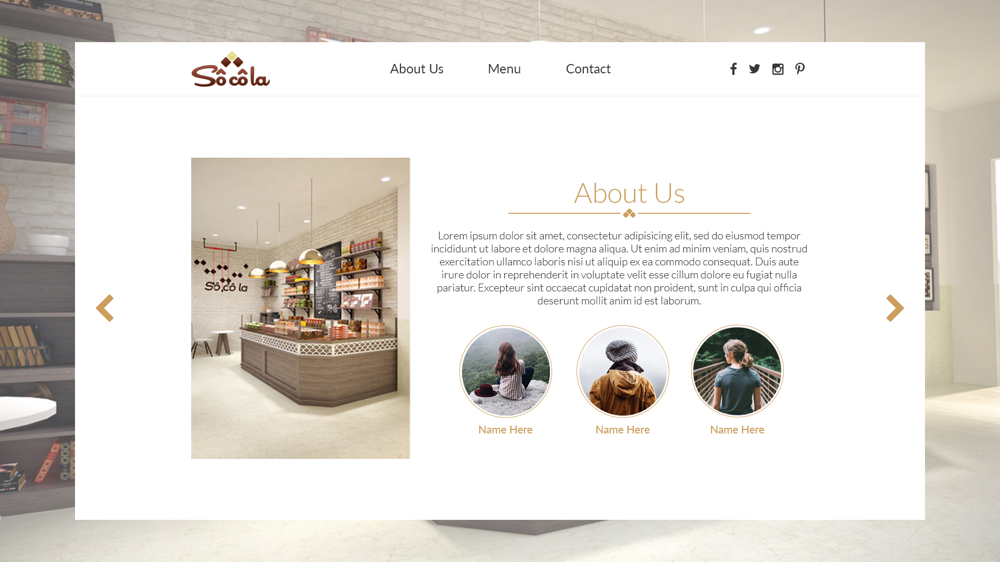

Transition between pages
The pages would transition by sliding from left-to-right. It would be triggered by the user clicking on any of the options in the top row, or by them clicking on either of the two pointers on the sides. It could also transition by fading, or by sliding up or down.
Menu
The look of the menu, or product page, would depend on how your menu is set up. I've added a couple of options for what the menu items could look like. Another thing about the menu page is regarding how you want to manage it, by which I mean do you want to have each product have it's own subpage for ingredients, photos, descriptions, etc. Also, do you want to be able to edit the contents of the menu without writing any code. If you do, I would recommend
WordPress. The downside of that is that it would involve a bit more codingwork to set up. The upside is that if you do it, you'd also be able to edit most of the contents on the website without any coding. You would simply log into the WordPress dashboard.
Mobile
The site would be fully responsive. The design on tablets could lean towards either of the two above, depending on which you prefer.
Contact
The contact form would feature the basics; name, email, subject and the actual message. More options can be added. Whatever the user has written would then be sent as an email to an address of your choosing, formatted pretty much however you like. Contact information such as phone number, email, address, etc. would also be featured here.